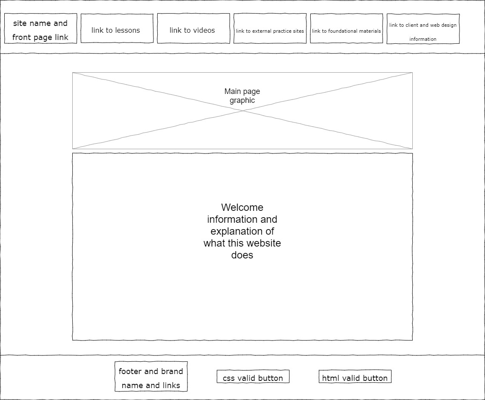
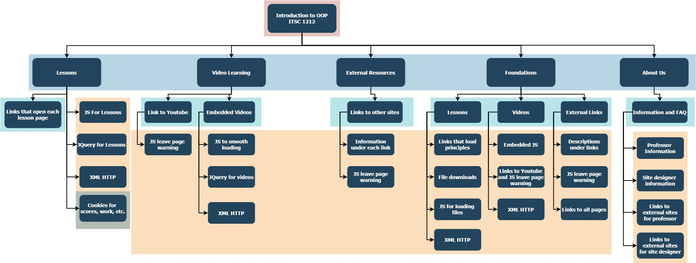

Proposal Project
OOP Foundations and Java Learning
Project Overview
- This application is a website to help students learn about Java-based object oriented programming. It will also contain links to other helpful learning sites and information and videos pertaining to both ITSC 1212 and the foundational principles of coding (with a focus on object oriented).
- The applictaion is to be used by students of ITSC 1212 or any others who want to learn about Java-based object oriented programming. It will also be used by Professor DI von Briesen so he can update and change the information to his liking.
- The webpage will contain multiple sections and links to videos created by my client, lessons and information provided by the client, links to other websites that provide good practice and helpful information, and a page containing information about the designer of the page and the client (only as much as he wishes to share).
Client Information
- DI von Briesen
- Professor at both UNC Charlotte and Central Piedmont Community College
- di.vonbriesen@uncc.edu
- [phone number available on request, up to client's discretion]


Site Map Information (note, naming scheme is not final, changes will be made according to client wishes as time progresses)
- The first page is Introduction to OOP ITSC 1212. Its purpose is to serve as the homepage for the website as well as an introduction to the site.
- The users of this page will be any students who are coming to learn, or my client when he wishes to make any changes or check on any updates.
- The content will be a welcome page graphic, a paragraph of information and welcom text. There will be a header menu with links to other pages and a footer with my brand tag and code validation buttons.
- No user data will be needed for this page. When users click on the menu buttons, they will send the user to the pages corresponding to the name.
- The second page is Lessons. Its purpose is to serve as the hub for the lessons my client will be providing.
- The users of this page will be any students who are coming to learn, or my client when he wishes to make any changes or check on any updates to course information.
- The content will be multiple links in there corresponding clickable boxes and short descriptions of the lessons. There will be a header menu with links to other pages and a footer with my brand tag and code validation buttons.
- User data may be needed depending on if this is were professor wants the interactive flashcards to be. Those fields would use cookies to validate the user info and previous answers when taking practice cards. When users click on the lesson boxes, they will expand like a dropdown and show a full section of lesson text, images, etc that has been imported via XML HTTP
- The third page is Video Learning. It will be a page with similar boxes as "Lessons" but will bring down embedded videos and include the links to youtube where they were posted.
- The users of this page will be any students who are coming to learn, or my client when he wishes to make any changes or check on any updates to course information.
- The content will be links in boxes like "Lessons" but will include instuctional videos and guides that my client provided. There will be a header menu with links to other pages and a footer with my brand tag and code validation buttons.
- No user data will be needed for this page. However, youtube will most likely keep track of if the user has watched the videos before.
- The fourth page is External Resources. It will be a page with links similar to pages two and three. Its purpose is to contain links to other good learning sites as well as small explanations of what each site is.
- The users of this page will be any students who are coming to learn, or my client when he wishes to make any changes or check on any updates to course information.
- The content will be links in boxes that redirect the user to other webpages with good info (but will alert them that they are leaving the webpage). There will be a header menu with links to other pages and a footer with my brand tag and code validation buttons.
- No user data will be needed for this page.
- The fifth page is Foundations. It be a page with links in boxes following the pattern of the other pages. Its purpose is to give basic instructions and information about what is to be expected when learning coding in general.
- The users of this page will be any students who are coming to learn, or my client when he wishes to make any changes or check on any updates to course information.
- The content will be links in boxes that when clicked will open like a dropdown menu and contain text, pictures, etc relating to the beginning of programming. These will be imorted using JS and XML HTTP. There will be a header menu with links to other pages and a footer with my brand tag and code validation buttons.
- No user data will be needed for this page.
- The final page is About Us. It is a page with text and links to the site designer's (my) information and text and links to the client's (professor vB) information. It is to help students and users get acquainted with the designers of the site and curriculum.
- The users of this page will be any students who are coming to learn, or my client when he wishes to make any changes or check on any updates to course information.
- The content will be text and then some links in buttons or boxes that lead to websites like github, webpages.uncc, freecodecamp, etc with an alert to warn them they are leaving the site. There will be a header menu with links to other pages and a footer with my brand tag and code validation buttons.
- No user data will be needed for this page.
Interactivity/Dynamic Functionality
- This page will have lots of JS to validate inputs and listen for user input. It will also use JQuery to load the standard footer and header each time a page is changed.
- There will be XML HTTP implementation to get the files my client wants to have on the site. They will be loaded using that and they can be changed easily accordingly.